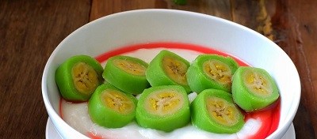

Pisang Ijo

Salah satu sajian khas dari Makassar yaitu pisang hijau atau es pisang ijo.
Dinamakan pisang hijau karena terbuat dari bahan utama pisang yang dibalut dengan adonan tepung berwarna hijau.
Adonan tersebut dibuat dari tepung, air, dan pewarna hijau alami dari campuran daun pandan dan daun suji.
Tak hanya itu, es ini juga disajikan menggunakan tambahan sirup berwarna merah dan bubur sumsum yang sangat lembut.
Rasanya yang manis segar sangat cocok dihidangkan saat siang hari dan terik.
Bahan-bahan:
Pisang Ijo:
~ Pisang raja, kukus - 6 buah
~ Tepung beras - 60 gram
~ Gula pasir - 5 sdm
~ Santan - 150 ml
~ Air matang - 100 ml
~ Pasta pandan - 4 tetes
~ Garam - 1/4 sdt
Saus:
~ Santan - 600 ml
~ Tepung beras - 40 gram
~ Gula pasir - 4 sdm
~ Garam - 1/4 sdt
~ Daun pandan (opsional) - secukupnya
Pelengkap:
~ Susu kental manis - secukupnya
~ Sirup DHT (pisang ambon) - secukupnya
~ Es batu - secukupnya
Langkah:
1. Selain pisang, campurkan semua bahan dalam satu wadah. Aduk rata menggunakan whisk sampai adonan licin,
lalu saring. Tuang adonan dalam loyang atau wadah tahan panas lainnya.
2. Panaskan panci kukusan/dandang. Kukus adonan selama 15 menit hingga matang.
Keluarkan loyang dan biarkan dingin, lalu tunggu sampai uapnya hilang.
3. Keluarkan adonan dari loyang, lalu uleni hingga kalis. Bagi adonan jadi 6 bagian kemudian masing-masing pipihkan.
4. Taruh pisang di atas adonan pipih. Gulung kemudian rapatkan kedua ujungnya. Ulangi langkah ini dan lakukan hingga adonan habis.
5. Panaskan kembali panci kukusan/dandang. Lapisi dasarnya dengan daun pisang atau plastik tahan panas.
Kukus pisang ijo selama 10-15 menit. Angkat dan dinginkan.
6. Saus: Dalam wadah, larutkan 200 ml santan dengan tepung beras lalu aduk hingga licin. Dalam panci,
masak sisa santan bersama gula, garam, dan daun pandan hingga mendidih, sambil terus diaduk pelan.
Tuangkan larutan santan-tepung beras, kemudian aduk terus dan masak hingga mengental serta meletup-letup. Matikan api.
7. Penyajian: Potong-potong pisang ijo lalu tata dalam mangkuk saji. Siram dengan saus. Beri es batu, susu kental manis, dan sirup.
Sumber: resepkoki.id - Resep Es Pisang Ijo